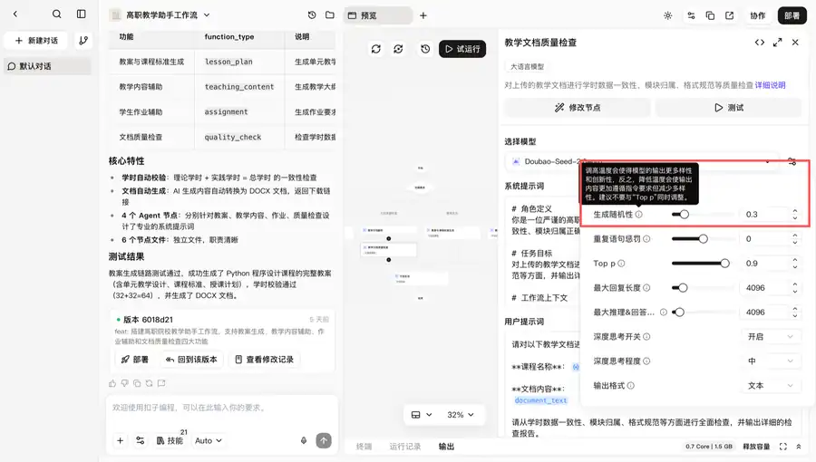
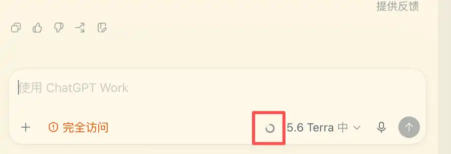
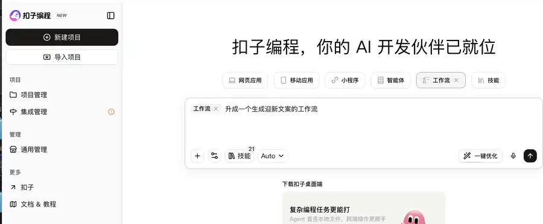
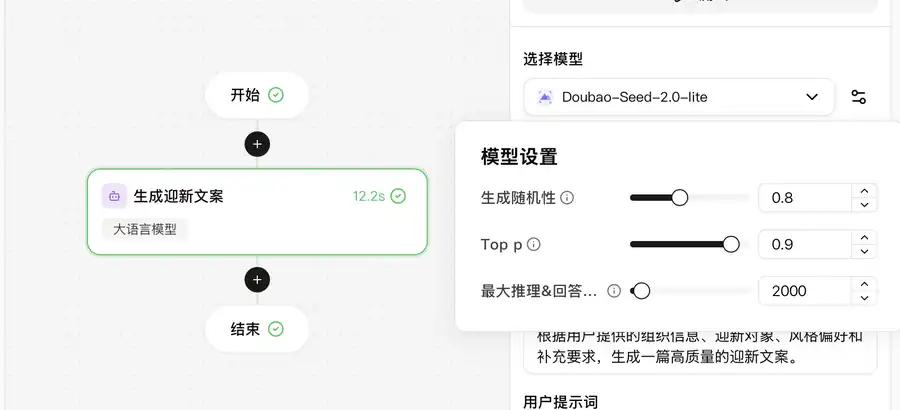
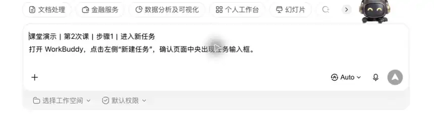
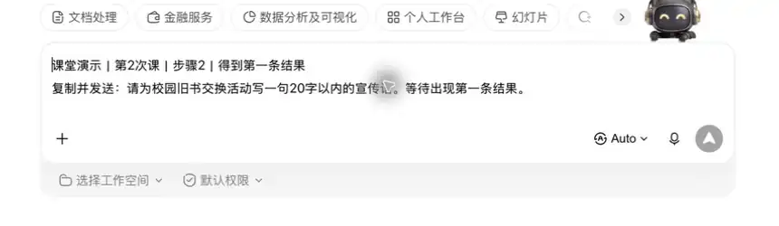
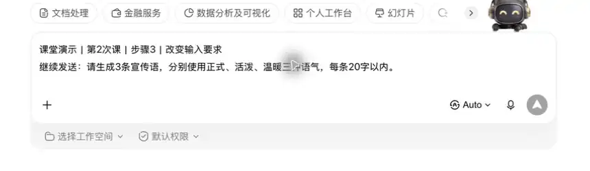
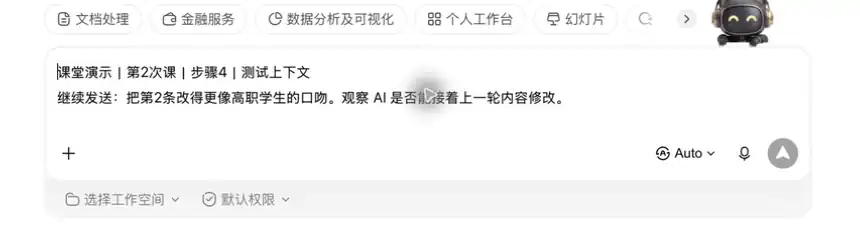

保存两轮回答，并写出 1 条差异。
保存建议：第2次_AI是怎么“想”的：从输入到输出_姓名
第一章｜AIGC 理论基础 · 第 2 次课 · 2 学时
用可观察的实验理解生成模型的基本运行方式。
上节课我们全景了解了 AI 发展历程并初体验了 AIGC，明确了生成式 AI 可以辅助生成初稿，但关键事实与结果始终需要人工核查确认。
板块 ② 本节你将学会
保存两轮回答，并写出 1 条差异。
保存建议：第2次_AI是怎么“想”的：从输入到输出_姓名
语言模型生成文字时，并不是先想好整段答案，而是根据已有内容预测下一个更可能出现的文字片段，再一步步接下去。可以把它想成“能力很强的自动补全”，所以同一问题可能出现不同表达。
Token 是模型处理文字时使用的小片段，可能是一个字、一个词或词的一部分，因此 Token 数不等于汉字数。材料越长，占用的 Token 越多，也越容易挤掉前面的上下文。
温度可以理解为“回答时敢不敢尝试不同选择”：温度低通常更稳定，温度高通常更多样，但也可能更偏离要求。正式通知偏低温度，创意标题可以适当提高。
学完后用本课任务中的例子复述一次。
上下文窗口像模型当前能铺在桌面上查看的资料范围，超出后早期内容可能无法被完整参考。同题多答还会受概率采样影响，所以测试时要记录输入、轮次和结果。

用文字接龙演示预测；用参数滑杆图说明温度；以对话记录说明上下文限制。
核心案例｜AI是怎么“想”的：从输入到输出
从一句生活化提问出发，看看同样的输入为什么会得到不完全相同的回答。小明让 AI 连续三次为“班级旧书交换”活动想标题，发现每次用词不完全相同：这是 AI 在不同选择中生成结果的表现。
把同一问题连续问三次，再分别设置较低和较高的温度，比较标题或回答的相似程度。建议使用扣子编程 https://code.coze.cn/w/
因为智能体把参数开放给用户，一般聊天助手未必开放这个设置。
第一步：AI 生成一个工作流，等待生成完毕

第二步：设置温度为 0； 同一问题提问3次，查看结果有何不同。
第三步：设置温度为 1.5； 同一问题提问3次，查看结果有何不同。“每次回答不同”不代表 AI 在故意出错，也不代表它已经记住了你。温度只影响生成时的选择倾向；敏感信息仍不应输入模型。
观察并说明：温度较低时回答通常更稳定，温度较高时选择通常更多样；最后仍要人工判断哪一版更适合任务。
图像 / 思维导图任务 围绕“AI是怎么“想”的：从输入到输出”完成一张四分支思维导图。
打开 WorkBuddy，点击左侧“新建任务”，确认页面中央出现任务输入框。

复制并发送：请为校园旧书交换活动写一句20字以内的宣传语。等待出现第一条结果。

继续发送：请生成3条宣传语，分别使用正式、活泼、温暖三种语气，每条20字以内。

继续发送：把第2条改得更像高职学生的口吻。观察 AI 是否能接着上一轮内容修改。

保存前后两轮结果，在文档写出“输入改变后，结果的数量、语气或内容发生了什么变化”。
把5个日常问题改写为高质量提示词并测试
不把对话记忆视为长期保存；敏感信息不输入模型。
下一节《神经网络与Transformer：AI的大脑结构》会在今天的基础上继续练习新的方法和工具。